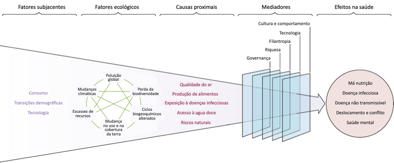

2 Antropoceno e Saúde
“Você não passa um único dia sem causar um impacto no mundo ao seu redor. O que você faz, faz diferença e você tem que decidir que tipo de diferença quer fazer.”
“A COVID-19 oferece-nos a chance de mudar quem éramos e o que sustentávamos. Seria uma pena perder esta oportunidade para uma segunda chance.”
— Anthony T’Hincks, An Author of Life
O Antropoceno é sobre a Era Humana. O termo combina os termos gregos “anthropo-”, que significa “humano”, com kainos ou “-cene”, o sufixo padrão para “época” no tempo geológico. Paul J. Crutzen e Eugene Stoermer, laureados pelo prêmio Nobel, cunharam o termo em um ensaio numa revista científica de sistemas terrestres (Steffen et al. 2015). O Antropoceno é um conceito que marca o início de uma época geológica proposta, em que a força dominante que molda as condições biofísicas da Terra é a atividade humana.
Atualmente, o Antropoceno é caracterizado por disrupções massivas nos processos do sistema terrestre, na estabilidade climática e nos ecossistemas, que resultaram no aumento da pegada ecológica da humanidade devido às atividades humanas. Presumivelmente com início nos últimos quatrocentos anos (Lewis e Maslin 2015), os impactos crescentes estão associados à “Grande Aceleração”, uma mudança global que após a Segunda Guerra Mundial levou a um crescimento massivo das atividades humanas e a mudanças demográficas, começando por volta de 1950 (Steffen et al. 2015). Esta época realça o reconhecimento dos limites ofuscados entre a humanidade e os sistemas da Terra, em que humanos induzem mudanças ambientais significativas que ameaçam toda a biosfera, incluindo os próprios humanos (Revkin 2016).
Aqui, a Dimensão Antropoceno e Saúde refere-se à compreensão de como impactos antrópicos específicos nos sistemas naturais da Terra estão conectados a estados de saúde, usando o sistema de determinantes sociais e ambientais de saúde (por exemplo, política, governança, gênero, local de trabalho, etnia, biodiversidade, água, solo e qualidade do ar, ambiente construído). A dimensão promove uma abordagem social e ecológica para promoção da saúde e prevenção de doenças, contemplando determinantes do nível individual ao populacional da saúde humana, animal e do ecossistema. A Dimensão Antropoceno e Saúde também é um reconhecimento das oportunidades para alcançar a Grande Transição por meio do zelo humano pelos sistemas naturais da Terra (Díaz et al. 2019). Para alcançar melhorias entre espécies e ecossistemas, é fundamental ir além dos modelos antropocêntricos de saúde e incorporar sistemas de determinantes de saúde animal e ecossistêmicos mais abrangentes (Card, Epp, e Lem 2018).
Para aprendizes, o objetivo transversal nesta dimensão é avaliar como as mudanças antrópicas nos sistemas naturais, incluindo suas causas proximais e distais, influenciam estados de saúde. A compreensão desse objetivo requer um foco especial nas interconexões entre as seguintes mudanças antrópicas e impactos na saúde (Tabela 2.1) (Aguirre, Tabor, e Ostfeld 2012; Myers e Frumkin 2020; Whitmee et al. 2015).
| Mudanças antrópicas | Impactos na saúde |
Alterações na biodiversidade Mudança no uso da terra Mudança nos fluxos biogeoquímicos Poluição global Mudança climática Condições extremas do clima Escassez de recursos (exemplo: comida e água) Alteração na densidade nutricional de alimentos |
Mudança nos padrões de doenças infecciosas Mudança nos padrões de doenças não transmissíveis Mudança nos padrões de doenças nutricionais Mudança nos padrões de saúde mental Mudança nos padrões de saúde reprodutiva |
A Grande Transição também exigirá uma compreensão dos fatores subjacentes e mediadores que aumentam ou diminuem esses impactos na saúde (Figura 2.1). Na dimensão anterior [Interconexão na Natureza], a separação da Natureza foi enfatizada como uma das causas mais importantes do nosso dilema atual. Assim, sugerimos adicioná-lo à Figura 2.1 como um “fator subjacente”. Além disso, uma mudança fundamental no sistema de valores proposto também leva a circunstâncias em que o hiperconsumo, os modelos econômicos disfuncionais e o desprezo evidente pelas gerações futuras são normalizados. Valores sociais e individuais, por fim, moldam políticas (ou a falta delas) e dinâmicas de poder injustas como, por exemplo, as estruturas de governança atuais, que perpetuam a nossa incursão na Terra. Portanto, deve-se compreender que os fatores mediadores e subjacentes podem ser ambos “causa e consequência” coexistindo na forma de ciclos de retroalimentação.

Principais conceitos e áreas de estudo sobre Antropoceno e Saúde
Determinantes sociais e ambientais da saúde
O Antropoceno e conceitos relacionados (por exemplo: capitaloceno)
Antropocêntrico e ecocêntrico
Globalização
Transição demográfica
Transição epidemiológica
Limites planetários
Pegada ecológica